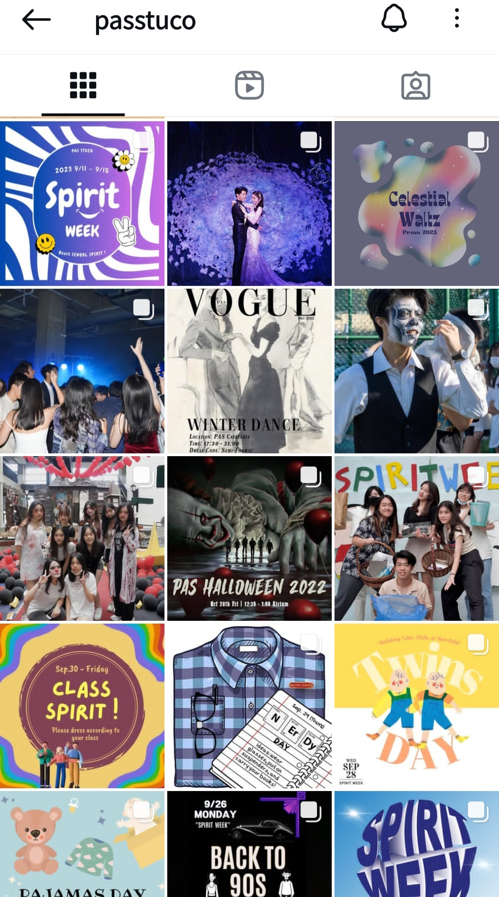

home
About
Samples of Work
Gallery
Experience
Contact
Samples of Work
Photojournalism Internship
China Times · 2025
Crisis Communication Analysis
ENG 1110 · 2023
Social Issue Analysis
High School · 2023

Social Media Content
PAS STUCO · 2022-23
Art Journalism Magazine
InDesign Project · 2021